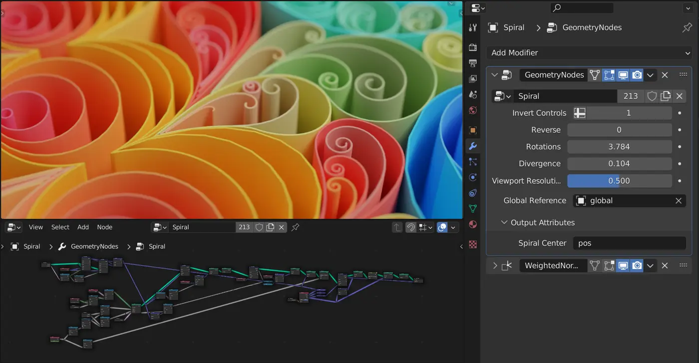
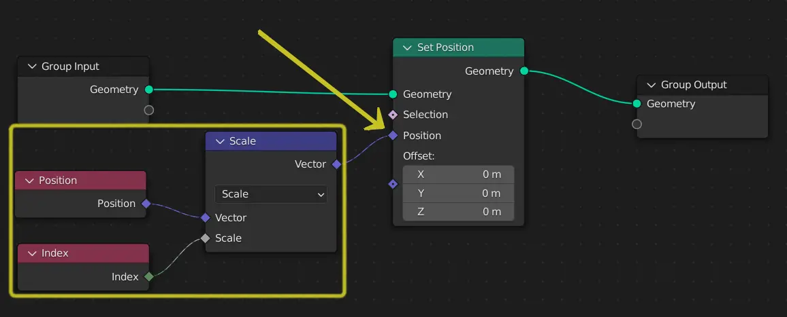

Follow a rule
Compass-and-straightedge steps, patterns, and architectural modules generated repeatable relationships.
From sliders to sockets
The workshop above changes a finished recipe. Here, connect its three geometry paths. A missing wire should make the result disappear; changing an input should change every copy.
Make and explainConnect points, a source shape, and the final output. Then predict how far the row extends.
Choose the output that belongs in each input socket. Read the data from left to right.
Connect the three sockets to see the generated row.
Hint: there is one fewer gap than posts.
If nothing appears, trace the final connection first. If the copies overlap, inspect Mesh Line Offset. This browser diagram models node flow; the Blender file is your proof of a working graph. Mesh Line reference · Instance on Points reference.
Start with the editable technique workshop above. Reuse your model in the next lesson. The detailed walkthrough below uses Blender; choose another app using Tool Rosetta and the transfer checklist above.
Geometry Nodes Workspace · 55–70 minutes · Grades 8–12
Every lesson so far hand-shapes one specific object. Geometry Nodes builds a recipe instead — a node graph that generates or modifies geometry — so changing one number can rescatter a thousand rocks or regrow an entire wall of bricks without touching a single vertex by hand.
Finish line: a plane scattered with instanced objects, randomized in scale and rotation, entirely from a node graph.
From drafting rule to generative system
Designers have long used grids, templates, geometric constructions, and algorithms to create families of forms. Early interactive CAD added constraints and master objects; node graphs later made a chain of operations visible, allowing artists to build systems without hiding every decision in code.
Compass-and-straightedge steps, patterns, and architectural modules generated repeatable relationships.
Structured drawings let instances and constrained relationships respond when their source changed.
Nodes connect data and operations so one graph can produce many controlled variations.
System question: Which part should become an input if another designer needs ten useful variations instead of one fixed result?
History source: Computer History Museum: constraints, masters, and instances in Sketchpad
Concept
A modifier that runs a node graph
Click the Geometry Nodes tab, select an object, and press New — Blender adds a Geometry Nodes modifier to the object and opens its node graph below the 3D Viewport. Nothing about the base mesh changes; the modifier reads it, transforms it, and hands the result to the viewport and the final render. Delete the modifier and the original mesh is exactly as it was.
Properties Editor → Modifier Properties (wrench) → Add Modifier → Geometry Nodes does the same thing without opening the workspace tab.
Reading a graph
Follow the geometry socket
Group Input can supply the object's original mesh and any controls you expose. A graph may instead generate new geometry, as the Mesh Line does in the lab above; in that case the original mesh can simply carry the modifier. Group Output receives the final geometry that appears in the viewport. Follow each socket connection to see which values control the result and which geometry reaches the output. Socket colors help distinguish geometry from vectors, numbers, and other data types.

Shift+A in the node editor, same as adding an object in the 3D Viewport.
Drag from an output dot to an input dot of a matching color. Blender auto-converts most compatible types.
Select a node and press Ctrl+Shift+click it to preview its output directly in the 3D Viewport before it reaches Group Output.
Exposing inputs
Turn a hard-coded value into a control
Open the node editor's Sidebar (N) and select the Group tab, then use the + button to add a new input socket — choose its type (Float, Integer, Vector, Boolean) and give it a real name. That socket immediately appears as a field in the Modifier panel, exactly like the Rotations and Divergence sliders in the screenshot above.
"Count" or "Scatter Density" reads clearly in the Modifier panel months later. "Value.002" does not.
Fields
One node, a different answer per point
A plain number is the same everywhere. A field — like Position, Index, or Random Value — produces a different value for every point, vertex, or instance it touches. This is what makes a scatter look natural instead of a single copy-pasted a thousand times: each instance can read its own index or position and use it to vary scale, rotation, or which object it becomes.

Build
Hands on
A flat plane (the scatter surface) and a small object to instance — an Ico Sphere or a simple rock shape works well.
Select the plane, open the Geometry Nodes workspace, and press New.
Shift+A → Geometry → Sample → Distribute Points on Faces, connected from Group Input's Geometry.
Shift+A → Instances → Instance on Points; plug the points into it and set its Instance input to an Object Info node referencing your rock or sphere.
Add a Random Value node (Float, with a Min/Max range) into the Instance on Points node's Scale input, and another feeding Rotation, before connecting to Group Output.
Add an input socket for Distribute Points on Faces' Density, so it appears as a slider in the Modifier panel.
Check